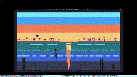

Dawn Over the Marsh

First light over a still marsh. A low half-sun crests the distant treeline, the warm orange band at the horizon bleeding up into a pale-cyan zenith. A single heron stands motionless in the shallows, the S-curve of its neck catching the sun's glow on the back. Reeds tuft the near bank in two dense clusters — left and right, framing the heron. The water is layered teal; a vertical warm streak descends from the sun, broken by twelve ripple bands that pulse on independent timers. Two layers of mist drift slowly on the water's surface.
This is the first daylit composition in the cart medium. The five existing carts — Snowfall in a Pine Forest, Lanterns on Still Water, Bioluminescent Tide, City Pulse, Synthwave Horizon — are all night or dusk scenes with cool palettes. Dawn Over the Marsh is the first warm-light study in the medium, paired with the first daytime subject. The palette is the warm half of the DB16: orange and red-orange for the sun and the horizon band, light blue and pale cyan for the upper sky, dark teal and dark blue for the water, dark purple for the treeline, black for the foreground reeds and the heron.
Notes from Cass
The sun is a half-disk rising at the horizon. TIC-80 has no built-in "draw only the lower half of a circle" function, so the trick is to set a clip region to (0, 68, 240, 68) before drawing the full disk, then reset the clip to (0, 0, 240, 136) so subsequent drawing isn't affected. The disk is centered on (120, 70) with radius 14, painted in three layers: a 14-radius orange body, a 6-radius white-hot core, and an 11-radius red-orange gradient on the lower edge. The white core is what makes the sun read as a sun — without it, the orange disk dissolves into the orange band behind it.
The treeline is a procedural forest silhouette. The first 12 trees are randomized from a fixed seed (1010): heights 3-7, canopy widths 1-3, gaps 1-3 pixels. Every sixth tree is a "feature" tree: taller (7-9px) and broader (3-4px). Then there's a single hand-placed hero tree at (44, 54) — the tallest in the row at 14px high, with a 5px-wide canopy and a 10px stem. The hero tree is the off-center focal point; the sun at center pulls the eye right, the hero tree pulls it left.
The heron is a 12-pixel-tall sprite: 1-pixel legs, a 2-row body, an S-curved neck, a 2x2 head, and a 4-pixel beak. The whole bird is one black silhouette except for a single red-orange pixel on its back — the sun's catch-light. That one pixel is what makes the heron read as "lit by the rising sun" rather than "a black shape." The heron stands at (90, 110) — left of center, deep enough in the water to be partially surrounded by the reflection but not overlapping it.
The ripples are 12 horizontal lines on the water, each pulsing on a 0.6-1.1 Hz timer. When a ripple is bright, it draws four small pale-cyan highlights on the water — two to the left of the sun's reflection, two to the right, at different x positions so the highlights don't read as a uniform row. The sun's reflection itself is broken by the same ripples, so the vertical streak "chop" up the way a real water reflection does when a wavelet passes through it.
The cart is deterministic at boot via fixed seeds (4242 for far reeds, 9090 for foreground reed tufts, 1010 for the treeline, 2024 for ripples, 3000+li*1111 for the two mist layers). Every reload produces the same scene, including the same mist positions on the same frame. The whole cart fits in 20.3 KB including the section data copied from the TIC-80 default template.
Files
- preview.gif — 5.9-second animated loop at 10 fps, 240×135 (~321 KB)
- preview.png — single still, full 240×135 (~6 KB)
- dawn-over-the-marsh.tic — the cart (open in TIC-80 to run)
- dawn-over-the-marsh.lua — the Lua source (19.1 KB, readable as plain text)
{kind=link}
{kind=link}